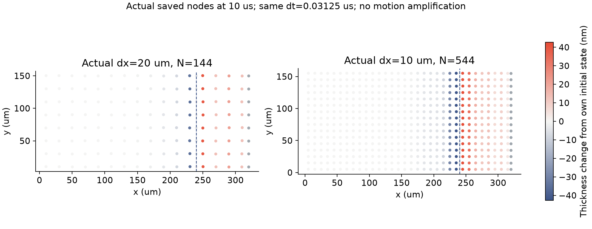
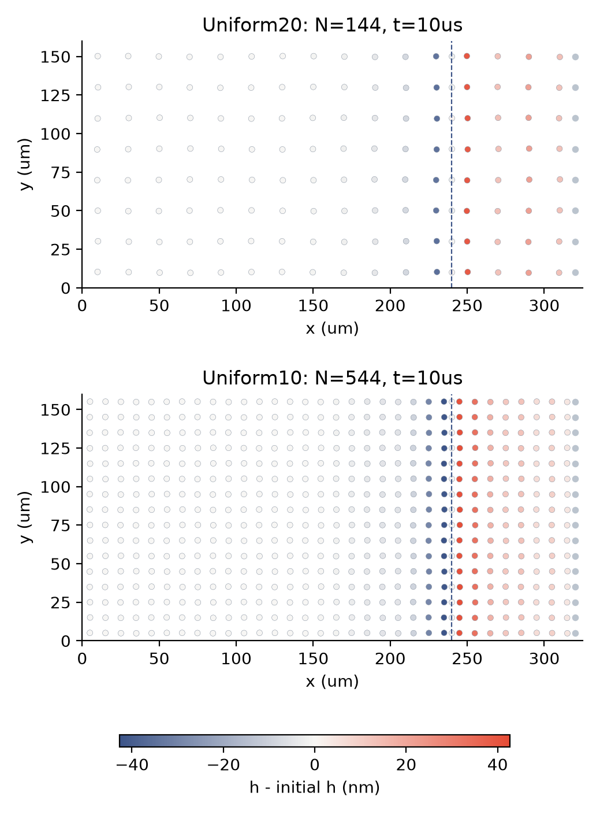
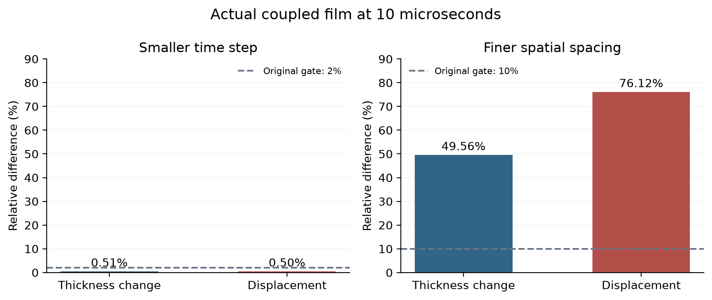
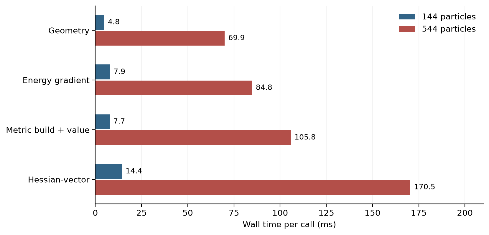

皂膜排液，
从守恒到可信预测。
候选20／10微米参考已完成：时间步减半的差异低于2%，空间差异仍未达到10%要求。下一步检验5微米；物理与实验验证仍待完成。


当前已有的证据
接下来核验的四件事
怎样才算预测了真实边缘交换？
目前我们验证的是数值原型：液量、表活和机械功能否对账，细化后结果是否稳定。下一阶段还要确认真实接触界面上的输运，再独立预测交换强度和新生薄膜元的厚度。
先测清楚
接触界面的位置与方向、双向液流和表活、边缘库存变化、接口功；同时记录膜厚、曲率和界面状态。新生薄膜元要在二维场中辨识，不能用最薄一个节点代替。
再检验预测
冻结材料和观测方法后，更换几何或边界条件，比较交换量、薄膜元厚度分布以及整体条纹。能量账本通过是必要条件，不能替代这一步。
这是后续研究规格，没有新增实验或模拟结果。当前先完成正在运行的时间配对和原定空间比较；原10／50／200微秒及完整C1目标保留。详细测量规格 · 本地源码与文献核对依据
此前阶段总结与图表（历史快照）
以下保留原始阶段快照、失败记录、图表和全部数据入口。它们有各自的时间与验收范围，不代表最新状态。
候选实际单步对照通过：三组输出差异0，3＋3独立审计通过 · 尚待同一候选实现的参考配对与完整收敛检查。
保留短边候选：固定几何与24项既有检查通过 · 原门槛未改，默认求解器未替换；尚待实际动力学与时间／空间比较。
新诊断：9个点构造出原短边规则的闭合反例 · 原门槛未改；尚未证明第78步确切根因，也未采用修复。
已接受77／320步，推进至2.40625微秒；Voronoi几何检查未通过。本轮时间／空间配对不可用，未重启或放宽门槛。查看失败现场、图和完整数据。仅停止已结束作业的半小时监视，C1长期研究继续。
新增切面诊断：5微米局部通量的两种算法更接近了吗？ 同步长比较，重建差异0.138%／0.396%；仍待完整动态收敛。
实际进展：5微米首组160步完成，原生与9／9保存步独立核对通过 · 第二组已启动；此处仍未验收时间／空间收敛。
原生组成核查：节点质量与初始表活力 · 八组观察、四组幅度配对通过；尚非完整连续极限或实际C1验证。
条件模型比较：能量稳定是否足以保证动力响应接近？ · 不是原生误差或连续极限证明，原C1仍待验证。
新进展：表活与膜厚共同演化的线性自由膜参照 · 17／19项通过、2项未通过，整体未全部合格；实际C1仍待验证。
新进展：同时核对压力、界面应力与边界功的局部流动参照 · 平直定厚、外部施力，尚非自由边缘或C1验证。
源码与冻结状态诊断：粒子速度能否代表整层水流？ · 条件重建不替代自由膜验证。
新诊断：压力改变后，通量需要多久建立？ · 仅固定表面速度的经典液层条件问题；自由膜与完整C1仍待验证。
最新：局部二阶组装已通过完整矩阵与实际耦合对照；5微米10微秒配对已启动，半小时监视生效。长轨迹尚未完成，原C1验收范围保留。
实际5微米启动已完成：2112粒子两次单步及独立核对通过，10微秒预算约6／12小时，尚未启动长作业。原时间／空间和物理验收范围保留。
新的实际状态诊断：加入完整曲面能量后，最短波长方向仍偏弱；同一物理波长加密后响应提高。空间误差成因与完整C1仍待验证。
后续诊断已完成：几何裁剪候选约快2.3倍，实际轨迹10/11文件逐字节一致；summary仅运行耗时不同，原定字节门槛仍未通过。全部物理输出相同不改变下面尚未通过的空间与物理验收。
先让每一滴液体对上账，
再检验膜的运动是否可信。
我们希望从膜与边缘的局部运动，预测两者怎样交换液体，进而解释薄膜如何变薄、长出条纹。当前完成的是这条路线的数值验证阶段。
这些是模拟内部的一致性检查。完整空间收敛、独立物理通量和实验验证仍未完成。
边缘怎样“供液”或“抽液”？
可以把皂膜想成一张带有厚边框的液体薄片。薄片与边框之间会交换液体，表面活性剂也跟着迁移。我们希望让这个交换由局部物理计算产生，并进一步预测新薄膜元的厚度，而不是预先指定排液速度。
原始 C1 主线保留
解析膜内—弯月面的局部自由度，记录液体和表面活性剂交换；只有证实尺度与误差可以分离后，才把它约化成边界交换关系。
目前停在哪一关？
模型能够运行，也有收支账本，但改变粒子细度仍会改变结果。先解决这个问题，后续交换系数、薄膜元厚度比和条纹预测才有可靠基础。
从“算得动”，推进到“逐项核对”。
加密的确发生在整张膜上。
下面是已经保存的10微秒状态：粒子从144增至544，颜色表示相对初始膜厚的变化。两图共用色标，位移没有放大；蓝色虚线是物理切面，灰色点是浴液节点。

这是一段释放后的短时启动，期间可以出现浴液向膜补液；目前不能把它称为长期框架净排液，更不是已经重现了实验条纹。
时间上接近，空间上还没接近。

左图像是用更细的时间刻度拍摄同一次运动，答案已经很接近；右图像是换了一张更细的计算网，答案仍有明显变化。两项检查回答不同的问题，守恒通过也不能替代它们。
新的10微米算例只完成原10、50、200微秒中的第一个检查点。50和200微秒仍需验证，10微米也不能视为真实解。此前规则布局的四项面积差分检查失败仍保留，未改判。
先量清楚时间花在哪里。
更细、更长的计算成本较高，因此新建了独立耗时探针：读取20和10微米算例的初始、10微秒冻结状态，分别计时。四个状态全部通过导入和单步求解检查，独立力学步与耦合步的机械终点一致。累计原生探针运行约15.4秒，没有重跑完整轨迹。

544粒子时，一次几何构造约69–71毫秒，一次能量梯度约84–85毫秒，一次Hessian向量计算约168–173毫秒；单次耦合步约2.3–2.4秒。几何构造值得优先检查，但目前还没有实施或证明任何加速。
| 冻结状态 | 几何／毫秒 | Hessian向量／毫秒 | 单次耦合步／毫秒 |
|---|---|---|---|
| 144粒子 / 初始 | 4.6 | 14.6 | 184.2 |
| 144粒子 / 10微秒 | 5.0 | 14.3 | 188.7 |
| 544粒子 / 初始 | 68.6 | 167.8 | 2317.0 |
| 544粒子 / 10微秒 | 71.3 | 173.1 | 2412.8 |
分项会相互调用，不能相加或直接换算成总成本占比。前五个核各预热1次、测量3次；力学步、耦合步和保存步观察器各测1次。系统负载和缓存会影响计时；CPU原始样本也保留，短样本可能量化为零。这不是受控的全轨迹性能测试。
按关口推进，避免只优化零碎细节。
1. 核实离散敏感性的来源
结合实际运动和完整刚度分析，区分初始表示、几何输运及离散算子的影响。短波面积弹性诊断只是线索；不要直接加入校正力来制造收敛。
2. 只做能支持加密计算的提速
优先检查几何构造中的重复工作。候选实现必须保持几何、能量、力和实际轨迹一致，再决定是否采用；不能用放宽容差或调整材料换速度。
3. 完成实际时间／空间验收
继续原50、200微秒检查，并在证据与预算允许时增加空间层级。仍用原2%时间、10%空间门槛；预计超过2小时的任务，启动前设置每半小时监视。
4. 回到物理预测与创新点
独立检验物理法向通量与牵引力，再预测交换系数、新薄膜元厚度比、条纹时间尺度及保留工况。以上预测和实验验证目前均未完成。
数据与复现
图表提供PNG和矢量PDF；原始输入、计时、失败构建记录和原生参数均保留。报告可本地直接打开。
展开参数、原始数据、日志与文献入口
- 研究源码与归档映射
- 事前冻结计划 · 构建与修复记录
- 源码、二进制和输入哈希 · 四次运行原始状态 · 完整分项计时摘要
- 原生日志 · 8份原始文件字节清单 · 原始数据ZIP · 恢复脚本
- 恢复命令：
python restore_raw.py REPORT_DIRECTORY NEW_OUTPUT_DIRECTORY；拒绝覆盖，恢复后逐文件校验SHA256。 - 与原始C1规划逐项对照 · 实际全域轨迹、审计及44份原始文件
- 短波响应既有研究：Hess & Springel (2010), §5.3；移动网格：Springel (2010), AREPO。相关报告中保留其适用范围，没有直接采用形状校正力。
- CPU计时API：Microsoft GetProcessTimes；Windows验证，其他平台回退计时未测试。